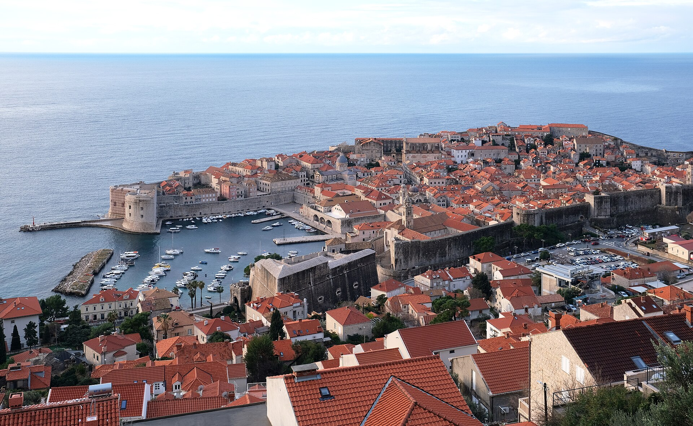

01
01
Split
Days 1–2 · live inside a Roman palace
Diocletian's Palace as the old town, Marjan hill sunsets, Bačvice swims, and day trips to Krka, Trogir or Salona.
Read →

02
Dubrovnik
Days 3–5 · walls, an island, and a slow day
City walls at opening time, Srđ cable car, Buža swims, Lokrum island — plus the Trebinje Bosnia add-on.
Read →
 03
03
Plitvice Lakes
National park · inland detour
Sixteen terraced lakes and waterfalls — Croatia's big inland nature moment, from Nicole's map list.
Read →
 24
24
Zagreb
From the Croatia deck · 2 nights · capital & culture
The deck's inland opener: Upper Town lanes, St Mark's tiled roof, Dolac Market, and štrukli before the road south.
Read →